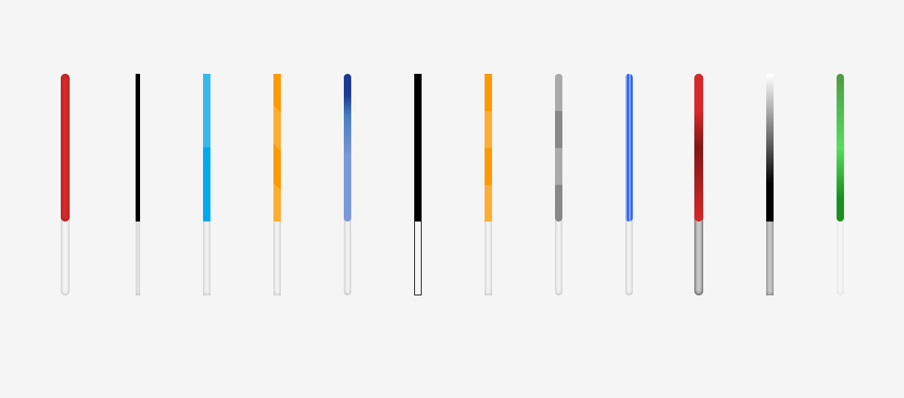

How to Customize Scrollbar in TailwindCSS
If you’re looking for a way to improve the look and feel of your website, you might want to consider using Tailwind CSS. This popular utility-first CSS framework can help you style your website in a way that’s both easy and efficient. In this article, we’re going to explore one particular aspect of Tailwind CSS that’s been gaining a lot of attention lately: Tailwind Scrollbar. We’ll cover what it is, how to use it, and some best practices to keep in mind.
What is Tailwind CSS Scrollbar?
Tailwind Scrollbar is a plugin that allows you to customize the scrollbar on your website. By default, the scrollbar on most websites is a basic, nondescript design that doesn’t offer much in terms of customization. With Tailwind Scrollbar, you can change the look and feel of the scrollbar to match the rest of your website. This means you can adjust the color, width, height, and other properties of the scrollbar to create a unique and consistent design.

How to Install Tailwind CSS Scrollbar
Before you can start using Tailwind Scrollbar, you’ll need to install it. Here’s a step-by-step guide on how to do that:
-
Install Tailwind CSS. If you haven’t already, you’ll need to install Tailwind CSS on your website. You can do this using the npm package manager or by downloading the CSS file directly from the Tailwind website.
-
Install Tailwind Scrollbar. Once Tailwind CSS is installed, you can install Tailwind Scrollbar using the npm package manager. Run the following command in your terminal:
npm install tailwind-scrollbar. -
Import Tailwind Scrollbar. Once Tailwind Scrollbar is installed, you’ll need to import it into your Tailwind CSS file. You can do this by adding
require('tailwind-scrollbar')to yourtailwind.config.jsfile.
How to Use Tailwind Scrollbar
Once you have Tailwind Scrollbar installed and imported, you can start using it to customize the scrollbar on your website. Here are some of the properties you can adjust:
Width and Height
You can adjust the width and height of the scrollbar using the scrollbar-width and scrollbar-height properties. For example, you can set the width of the scrollbar to 10px using the following code:
::-webkit-scrollbar {
width: 10px;
}
Track and Thumb Colors
You can adjust the color of the scrollbar track and thumb using the scrollbar-track-color and scrollbar-thumb-color properties. For example, you can set the track color to gray and the thumb color to blue using the following code:
::-webkit-scrollbar-track {
background-color: gray;
}
::-webkit-scrollbar-thumb {
background-color: blue;
}
Scrollbar Track and Thumb Hover States
You can also adjust the hover states of the scrollbar track and thumb using the scrollbar-track-hover and scrollbar-thumb-hover properties. For example, you can set the track hover color to black and the thumb hover color to red using the following code:
::-webkit-scrollbar-track:hover {
background-color: black;
}
::-webkit-scrollbar-thumb:hover {
background-color: red;
}
Examples on Tailwind CSS Scrollbar
1. Customizing the scrollbar in a chat application
HTML
<div class="h-96 overflow-y-scroll scrollbar-thin scrollbar-thumb-gray-400 scrollbar-track-gray-300">
<ul>
<li>Message 1</li>
<li>Message 2</li>
<li>Message 3</li>
<li>Message 4</li>
<li>Message 5</li>
<li>Message 6</li>
<li>Message 7</li>
<li>Message 8</li>
<!-- more messages -->
</ul>
</div>
::-webkit-scrollbar {
width: 6px;
}
::-webkit-scrollbar-thumb {
background-color: #718096;
}
::-webkit-scrollbar-track {
background-color: #CBD5E0;
}
In this example, we have a chat application with a container that displays a list of messages. We have applied the h-96, overflow-y-scroll, scrollbar-thin, scrollbar-thumb-gray-400, and scrollbar-track-gray-300 classes to this container.
The h-96 class sets the container’s height to 96 pixels, while the overflow-y-scroll class enables the vertical scrollbar. The scrollbar-thin, scrollbar-thumb-gray-400, and scrollbar-track-gray-300 classes customize the scrollbar’s appearance.
In the CSS code, we have used the ::-webkit-scrollbar pseudo-element to customize the scrollbar’s appearance. We have set the width of the scrollbar to 6 pixels using the width property.
We have also used the ::-webkit-scrollbar-thumb pseudo-element to set the background color of the scrollbar’s thumb using the background-color property. Finally, we have used the ::-webkit-scrollbar-track pseudo-element to set the background color of the scrollbar’s track using the background-color property.
Customizing the scrollbar in a social media feed
HTML
<div class="h-96 overflow-y-scroll scrollbar-thick scrollbar-thumb-blue-500 scrollbar-track-blue-100">
<ul>
<li>Post 1</li>
<li>Post 2</li>
<li>Post 3</li>
<li>Post 4</li>
<!-- more posts -->
</ul>
</div>
CSS
::-webkit-scrollbar {
width: 10px;
}
::-webkit-scrollbar-thumb {
background-color: #4299e1;
}
::-webkit-scrollbar-track {
background-color: #EDF2F7;
}
In this example, we have a social media feed with a container that displays posts. We have applied the h-96, overflow-y-scroll, scrollbar-thick, scrollbar-thumb-blue-500, and scrollbar-track-blue-100 classes to this container.
The h-96 class sets the container’s height to 96 pixels, while the overflow-y-scroll class enables the vertical scrollbar. The scrollbar-thick, scrollbar-thumb-blue-500, and scrollbar-track-blue-100 classes customize the scrollbar’s appearance.
In the CSS code, we have used the ::-webkit-scrollbar pseudo-element to customize the scrollbar’s appearance. We have set the width of the scrollbar to 10 pixels using the width property.
We have also used the ::-webkit-scrollbar-thumb pseudo-element to set the background color of the scrollbar’s thumb using the background-color property. Finally, we have used the ::-webkit-scrollbar-track pseudo-element to set the background color of the scrollbar’s track using the background-color property.
Note: that the examples above use the -webkit prefix to target the WebKit-based browsers (e.g. Chrome, Safari). To customize the scrollbar in other browsers, you may need to use different vendor prefixes and/or different properties. Tailwind CSS provides various scrollbar utility classes that can help you customize the scrollbar’s appearance quickly and easily.
Best Practices for Using Tailwind Scrollbar
Here are some best practices to keep in mind when using Tailwind Scrollbar:
1. Don’t Overdo It
While it’s tempting to go all out with your scrollbar design, it’s important to remember that the scrollbar is a small part of your website. Don’t let it overshadow the rest of your design.
2. Be Consistent
Make sure your scrollbar design matches the rest of your website design. Use colors, fonts, and other design elements that are consistent with the rest of your website.
3. Test Your Design
Make sure to test your scrollbar design on different devices and browsers to ensure that it works and looks good on all platforms. This will ensure that your website is accessible to all users.
4. Use Responsive Design
If your website is responsive, make sure to adjust your scrollbar design to match the different screen sizes. This will ensure that your website looks good on all devices.
Conclusion
Tailwind Scrollbar is a powerful tool that can help you customize the scrollbar on your website. By adjusting the width, height, color, and other properties, you can create a unique and consistent design that matches the rest of your website. However, it’s important to remember to not overdo it, be consistent, test your design, and use responsive design. By following these best practices, you can create a beautiful and functional scrollbar design that enhances the overall user experience of your website.
FAQs
-
Is Tailwind Scrollbar compatible with all browsers? Tailwind Scrollbar works best on WebKit-based browsers such as Google Chrome and Safari. It also works on Firefox, but the design may not be as consistent across all platforms.
-
Can I use Tailwind Scrollbar with other CSS frameworks? Yes, you can use Tailwind Scrollbar with other CSS frameworks such as Bootstrap and Foundation.
-
Can I customize the scrollbar design using JavaScript? Yes, you can customize the scrollbar design using JavaScript. However, using Tailwind Scrollbar is a more efficient and easier way to customize the scrollbar.
-
Does Tailwind Scrollbar affect the performance of my website? Tailwind Scrollbar is lightweight and does not affect the performance of your website. However, adding too many customizations can slow down the performance of your website.
-
Is Tailwind Scrollbar free to use? Yes, Tailwind Scrollbar is open-source and free to use. You can download and use it on your website without any restrictions.


Use the share button below if you liked it.
It makes me smile, when I see it.